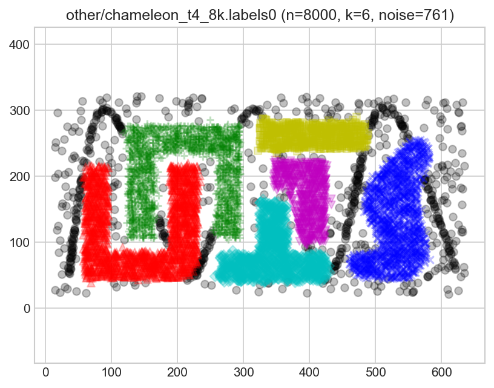
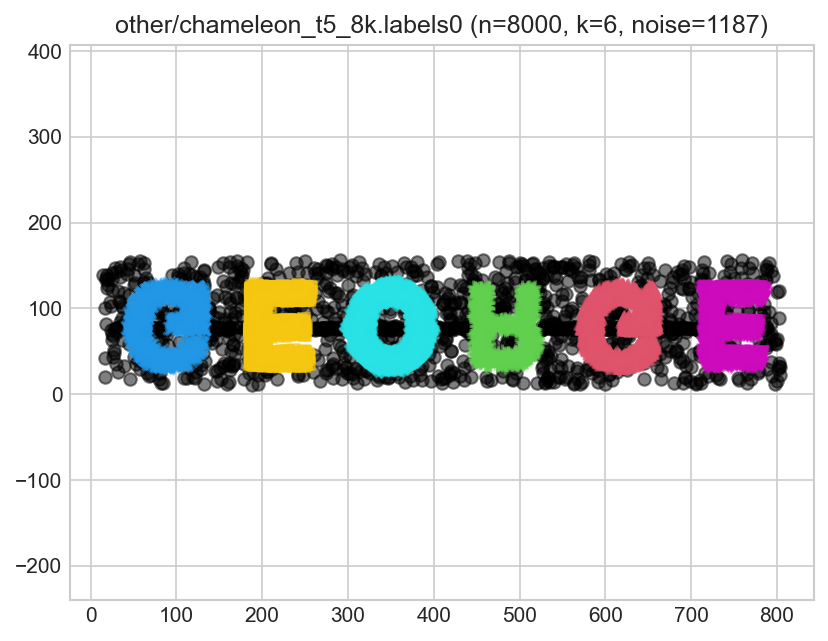
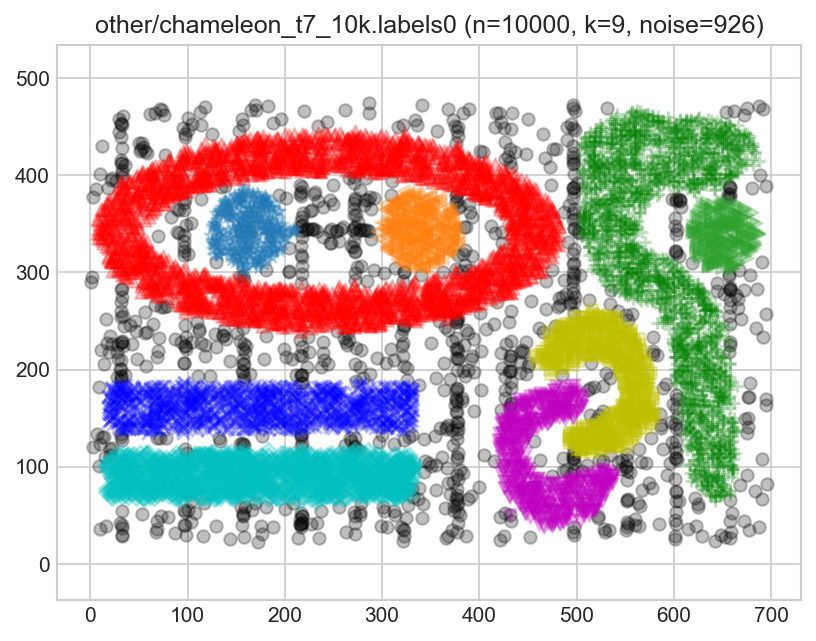
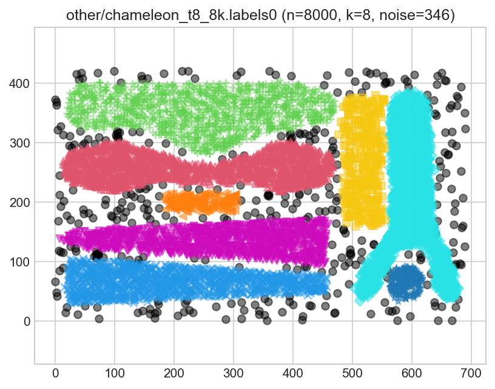
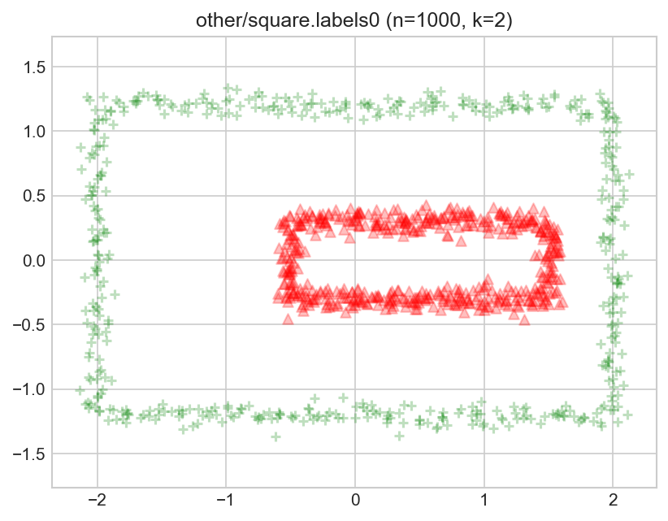

Benchmark Suite for Clustering Algorithms – Version 1 is maintained by Marek Gagolewski
Datasets
It is often suggested that the source is: G. Karypis, E.H. Han, V. Kumar,
CHAMELEON: A hierarchical clustering algorithm using dynamic modeling,
IEEE Transactions on Computers 32(8), 68-75, 1999.
Yet, such a dataset is not mentioned in this paper.
Web: http://glaros.dtc.umn.edu/gkhome/cluto/cluto/download
`labels0` generated by A. Cena and M. Gagolewski.
`0` denotes the noise class (if present).labels0true_k= 6, noise= 761, true_g=0.251
label_counts=[1741, 1669, 1559, 965, 658, 647]

It is often suggested that the source is: G. Karypis, E.H. Han, V. Kumar,
CHAMELEON: A hierarchical clustering algorithm using dynamic modeling,
IEEE Transactions on Computers 32(8), 68-75, 1999.
Yet, such a dataset is not mentioned in this paper.
Web: http://glaros.dtc.umn.edu/gkhome/cluto/cluto/download
`labels0` generated by M. Gagolewski.
`0` denotes the noise class (if present).labels0true_k= 6, noise= 1187, true_g=0.033
label_counts=[1193, 1188, 1166, 1160, 1056, 1050]

Source: G. Karypis, E.H. Han, V. Kumar,
CHAMELEON: A hierarchical clustering algorithm using dynamic modeling,
IEEE Transactions on Computers 32(8), 68-75, 1999.
Web: http://glaros.dtc.umn.edu/gkhome/cluto/cluto/download
`labels0` generated by M. Gagolewski.
`0` denotes the noise class (if present).labels0true_k= 9, noise= 926, true_g=0.473
label_counts=[2722, 2198, 1031, 975, 615, 589, 349, 332, 263]

Source: G. Karypis, E.H. Han, V. Kumar,
CHAMELEON: A hierarchical clustering algorithm using dynamic modeling,
IEEE Transactions on Computers 32(8), 68-75, 1999.
Web: http://glaros.dtc.umn.edu/gkhome/cluto/cluto/download
`labels0` generated by M. Gagolewski.
`0` denotes the noise class (if present).labels0true_k= 8, noise= 346, true_g=0.365
label_counts=[1554, 1451, 1450, 1383, 1110, 350, 181, 175]

Source: A high performance implementation of HDBSCAN clustering.
http://hdbscan.readthedocs.io/en/latest/ Copyright (c) 2015, Leland McInnes;
https://github.com/scikit-learn-contrib/hdbscan/blob/master/notebooks/clusterable_data.npy
`labels0` generated by M. Gagolewski. `0` denotes the noise class.labels0true_k= 6, noise= 510, true_g=0.181
label_counts=[410, 366, 326, 306, 207, 184]
The (? - see below) famous Fisher's *iris* data set.
Source: Fisher R.A. (1936). The use of multiple measurements in taxonomic
problems, Annual Eugenics 7, pp. 179-188.
Note that there are many flavors of this dataset available on the internet.
Here, we use the one available in the R package `datasets`
(as of R version 3.5.1). In particular, the one available in the UCI repository
has errors in rows #35 and #38.
For discussion, see: Bezdek J.C. et al. (1999). Will the real iris data please
stand up?, IEEE Transactions on Fuzzy Systems 7(3), pp. 368-369.
doi:10.1109/91.771092labels0true_k= 3, noise= 0, true_g=0.000
label_counts=[50, 50, 50]
(preview generation suppressed)
An imbalanced version of the famous Fisher's *iris* data set,
in which we take only 5 last observations from the 1st group (*iris setosa*).
This benchmark set was proposed in Gagolewski M., Bartoszuk M., Cena A. (2016).
Genie: A new, fast, and outlier-resistant hierarchical clustering algorithm,
Information Sciences 363, pp. 8-23. doi:10.1016/j.ins.2016.05.003
Source: Fisher R.A. (1936). The use of multiple measurements in taxonomic
problems, Annual Eugenics 7, pp. 179-188.
Note that there are many flavors of this dataset available on the internet.
Here, we use the one available in the R package `datasets`
(as of R version 3.5.1).labels0true_k= 3, noise= 0, true_g=0.429
label_counts=[5, 50, 50]
(preview generation suppressed)
Source: <unknown>
`labels0` generated by M. Gagolewski. `0` denotes the noise class (if present)labels0true_k= 2, noise= 0, true_g=0.000
label_counts=[500, 500]
